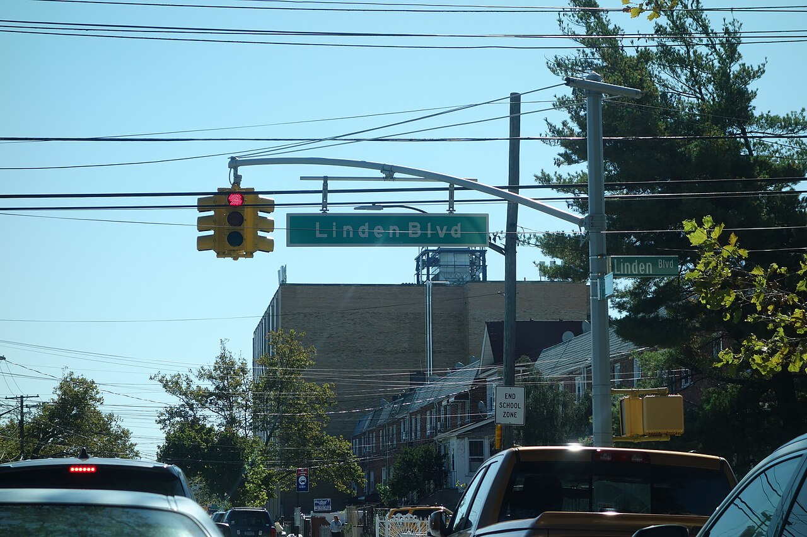
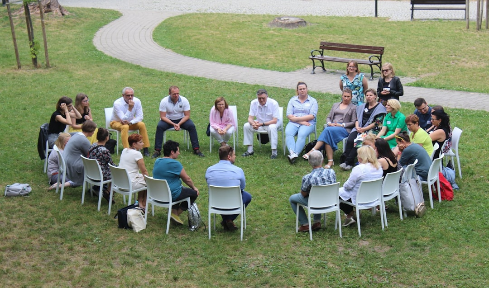
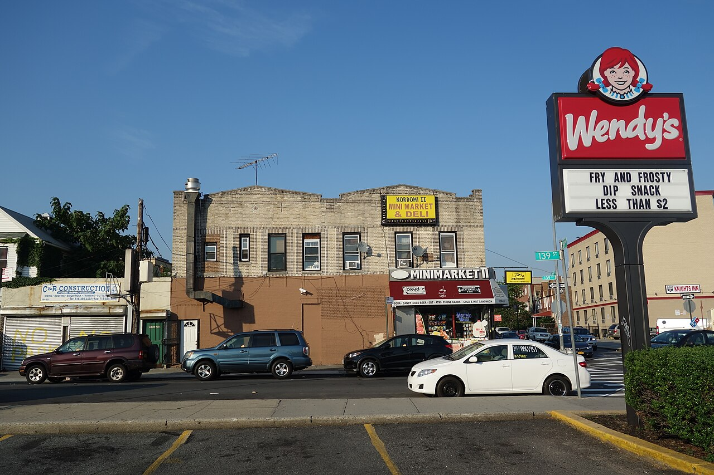
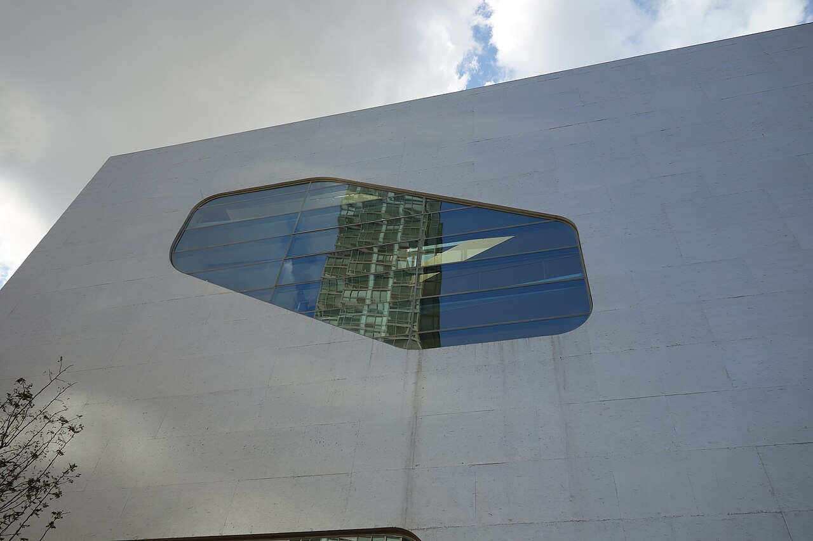
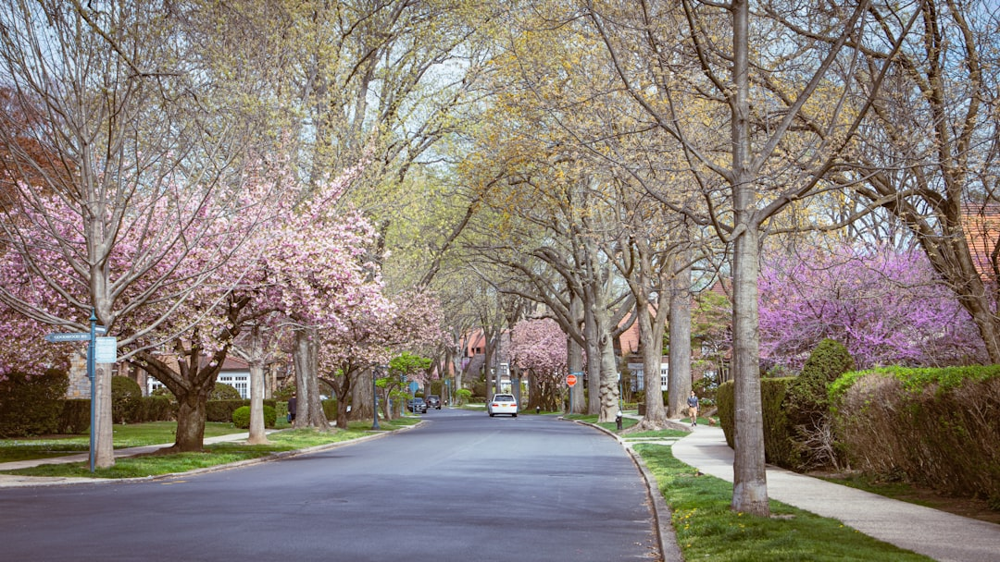
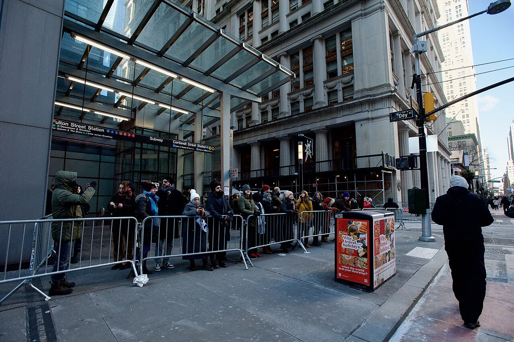
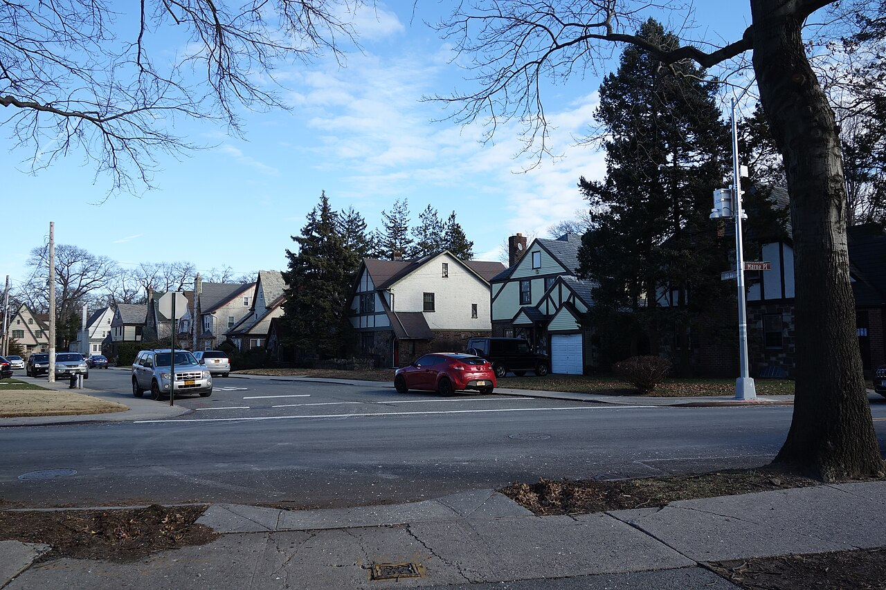

BCC exists to understand Southeast Queens deeply and to help shape what comes next. This is our perspective, our process, and our commitment to the community we come from and build with.
Our past.
Our future.






We build knowledge, tools, and relationships that strengthen Southeast Queens communities and create pathways to ownership, opportunity, and power.
A Southeast Queens where community and history is honored, our neighborhoods thrive, our youth lead, and our communities shape what's next.
Through BCC, I can be a grantee, a media company, a researcher, an advocate, a data person, a storyteller, and a business that actually helps us. BCC is a place for connecting lots, investigating stories, and building ideas into community resources.
I wanted to build something that honored the way I actually work — across fields, across blocks, across ideas. Something rooted in Southeast Queens that could hold all the things I care about: data, culture, ownership, and what comes next for us.
Long story short, BlaQue Community Cares is how I do what I do in the community. That's it.
— Alecia
Founder, BlaQue Community CaresImagine a place that serves as a living room for Southeast Queens — a headquarters, our profile, and a launchpad for future Southeast Queens projects. A space where research meets action, where neighbors meet opportunity, and where culture is preserved and celebrated.
Community, research, media, and business under one roof
Ownership, data justice, youth leadership
Southeast Queens, NYC

A space for town halls, policy discussions, and community decision-making.
Mentorship, leadership training, and creative workshops for young people.
Digital tools, data literacy, and technology access for the community.
Preserving stories, photos, and history from Southeast Queens neighborhoods.
Regular gatherings that bring neighbors together over food and conversation.